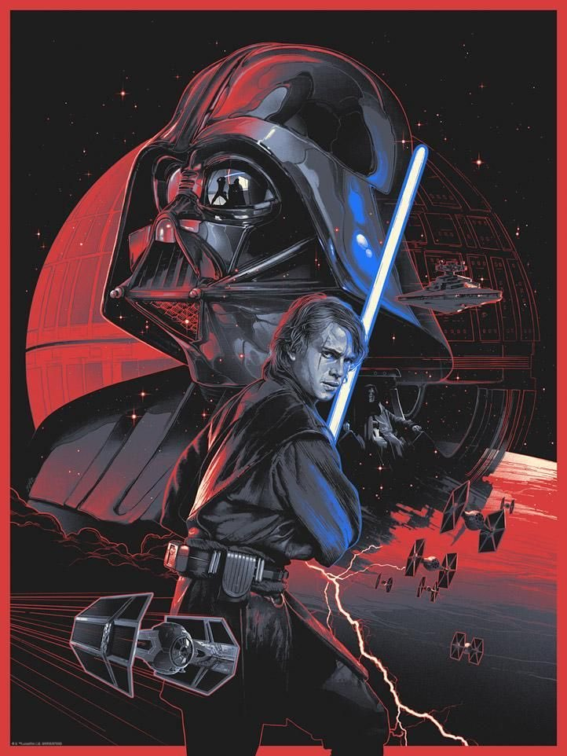

The Star Wars gaming galaxy is about to experience its own Big Bang.
“We’ve got a lot of stuff we’re ready to start sharing with fans,” Lucasfilm Games VP Douglas Reilly tells StarWars.com, “because we’ve been working quietly behind the scenes for a while now, waiting for this moment.”
And by “this moment,” Reilly is referring to a new direction and era for Star Wars and Lucasfilm gaming overall, as Lucasfilm Games is now opening the doors to developers that want to come play in the galaxy far, far away. “We’re looking to work with best-in-class teams that can make great games across all of our IP. We’ve got a team of professionals here at Lucasfilm Games who can work with the developers, shape the stories, shape the creative, shape the games, to make them really resonate with fans and deliver across a breadth of platforms, genres, and experiences so that all of our fans can enjoy the IPs that they know and love,” he says.
Case in point, the huge news that Lucasfilm Games and Ubisoft are collaborating on a new story-driven, open-world Star Wars game. It’s a genre long-requested by fans, and will come to life via Massive Entertainment, Ubisoft’s critically-acclaimed studio based in Malmö, Sweden. “We’re really excited about an opportunity to work with the team at Massive, led by David Polfeldt and the creative director, Julian Gerighty. We’ve spent almost a year now, working to get to know them and what they want to bring to the table,” Reilly says. “I’m a huge fan of them, personally. I think we’re really excited about where that project is going, because they have a unique vision for the story and the game they want to deliver.”

Star Wars
THE CLONE WARS REWATCH: FRIENDS AND ENEMIES “TOGETHER AGAIN”
To celebrate the final season of Star Wars: The Clone Wars on Disney+, we’re undertaking a full chronological rewatch of the five original seasons, The Lost Missions, and the theatrical release. We’d be honored if you would join us for the weekly #CloneWarsRewatch — you can watch this week’s episode on Disney+ now — and share your thoughts on the award-winning series. Who is Ahsoka now that she’s no longer a Jedi? To the Pykes and the Martez sisters, she’s a Jedi disguised as a petty smuggler, a low-life rogue.
And to Bo-Katan Kryze, former member of Death Watch who was once as dangerous as any gang boss or crime lord in the underworld? She’s a symbol of hope.
She’s a person who would risk her own life to save her friends, even friends she’s only just recently met. She’s a person who would inspire their trust and loyalty. She’s a person who would face the consequences of her past and take responsibility for her actions.
Hämeen ammattikorkeakoulu HAMK PL 230 13101 Hämeenlinna